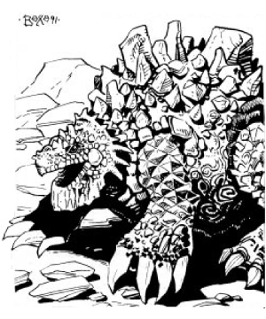
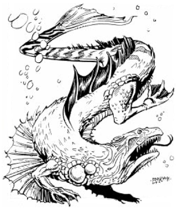

Drakes are gargantuan, reptilian monsters that use Athas as their personal hunting grounds. Drakes comprise a very powerful, nonintelligent group of creatures on Athas. However, they are not stupid. If natural instinct, cunning, and ferocity were measurable, drakes would surpass many other creatures. They are feared for their size, speed, and devastating abilities in combat, the latter due, in great part, to their very powerful psionics. Many on Athas consider the drakes to be second only to the Dragon in this category.
Drakes are not natives of Athas. The first drakes used tremendous psionic powers to travel from their home elemental planes to Athas, where they found a world much to their liking. Many generations of drakes have been born on Athas since that time.
Humans and humanoids comprise the mainstay of their diet. They will eat mekillots when available and erdlu if necessary. Drakes prefer the taste of carnivore flesh over any other type of meat.
Combat: Although powerful psionicists, most drakes prefer physical combat. All drakes have claw/claw/bite/tail lash attacks, psionics, and a breath weapon (useable once per day). Air drakes also have a wing-buffet attack. In combat drakes tend to focus all of their attacks on a single target, killing it and then moving on to the next.
Drakes use their claws for locomotion and digging hovels. A drake must use its claws regularly or the nails will grow too long and curve inward into the footpads. Drakes do not always kill their food before eating it. Damage caused by the claw attacks varies by drake type.
Drakes do not hesitate to use their bite attack especially if the strike could be the killing blow. If a successful bite attack roll exceeds the required number by four or more, drakes will clamp their victims within their jaws and then shake their heads from side to side with all of their might. This action doubles the damage caused by the first attack. As long as the victim remains alive, the drake will continue this action, scoring automatic damage each round equal to the original bite damage (before being doubled). If possible, the drake will swallow the dead or injured victim and move on to another treat. Digestive acids begin their work on the following round causing 1d20 damage per round (with no saving throw allowed) until the victim has been digested. Personal items must make saving throws versus acid or also be destroyed.
The tail attack of the drake can be the most devastating. Lashing its tail in a side-to-side sweeping motion, the drake can hit objects that it cannot even see at no penalty. (The tail lash is considered an area attack and not an attack against an unseen target, hence no -4 penalty.) Any creature struck by the tail lash regardless of size must save versus petrification or be stunned for 1d6 rounds. The damage caused by the tail lash varies among the types of drakes.
All drake have the ability to make an elemental attack, which takes different forms according to the drake. Fortunately drakes can only use this terrible ability once every 15 days, as it takes that long for them to recreate the elemental effect (see below). The effect varies between the different drakes, but the result is always devastating.
The greatest power of the drake is its innate psionics. Drakes possess various psionic powers that always manifest themselves with no psionic strength point loss affecting any of the drakes’ other psionic abilities. These natural psionic powers are all devotions and are the same for all the varieties of drakes. They are:
Note that the drakes’ body control power, which allows them to adapt to a single, pre-selected, hostile environment, is automatically linked to their elemental identification, be it air, earth, fire, or water.
The innate abilities function as described in The Complete Psionics Handbook. These abilities, coupled with each drake’s individual psionic powers, make them deadly foes.
Habitat/Society: Drakes are mysterious creatures. Few people believe they really exist. Even fewer have ever seen one, and very few of those have lived to tell about the experience. Hunting drakes is a challenge for the foolhardy or suicidal in Athasian society. However, on rare occasions drakes do succumb to old age or illness and pass on. No one knows how long a drake lives, and few of them have ever been killed.
A drake’s habitat is dictated by his home elemental plane. Water drakes are the most limited on Athas, preferring ponds and other bodies of water to make their homes.
The drake’s actual lair is never actually an open space — there are few open spaces back on their home planes. Drakes are more comfortable when surrounded, literally, with their home element. An earth drake, for instance, does not live in a vast cavern, as one might think, but instead in a very cramped, tight space in which he barely fits — and he’s right at home. Consequently, drake lairs are more difficult to penetrate than the lairs of other large creatures.
Several of those who have seen drakes have mistaken them for the dragon itself. Rumors about multiple dragons are rampant through Athas — that there may be several true dragons — but these are usually dismissed. Several so-called additional dragon sightings have been discovered to be drake sightings instead.
Other natives of the drake’s elemental plane tend to look down on them as deserters or creatures who abandoned the pure elements for this lesser plane. Encounters between drakes and other elemental beings are always tense, often unpleasant, and sometimes violent. Drakes never return to their native planes. Most, in fact, have never been there, being the descendants of drakes who immigrated to the prime material plane centuries ago. Elementals and drakes from the same plane almost always come to blows when they meet on the prime material plane. Oddly, contact between elemental beings from different planes is perfectly normal with none of the aforementioned animosity.
At their highest levels, psionicists can become powerful beast masters, and among their favorite psionic beasts are drakes. Details on this relationship are presented in the Dragon Kings hardbound.
Ecology: The hide of a drake can fetch an enormous price on the trading market. It can also result in a death penalty. The hides, teeth, claws, and blood are of such value that some sorcerer-kings forbid their sale. They have instructed templars to confiscate any such items that appear in the market in the name of their sorcerer-king. Because drakes are so rare it is easy for templars to claim the item was stolen from the sorcerer-king and have the seller put to death. Elves, of course, defy these edicts at every turn, and make a fair profit selling drake materials while just one step ahead of their templar pursuers.
The hide makes excellent armor. Once crafted into leather armor it attains the leather armor defense value minus the drake’s original negative armor class score (i.e., leather is AC 8; if made from the hide of an air drake whose AC was -2, then the air drake leather armor would have a defense value of Armor Class 6 (8 -2 = 6)). The teeth and claws make excellent weapons; although not magical, they are considered +2 because of the bone’s strength and sharpness. The blood of the beast is also valuable as it is used in certain alchemical solutions.
Beyond these truly useful items, folklore holds that just about any portion of a drake’s carcass holds a great deal of magical luck. Disreputable elven hawkers push a variety of lucky tokens fashioned from drake parts, but only under the table in a special place, out of the templars’ sights. Most are hoaxes, but even those that are real have no real magical value. Despite this, drake amulets draw large prices from the ever hopeful of Athas.
Drakes mate when the urge strikes them and not on a regular cycle. The male is then driven away and the female patiently waits. One, at most two, eggs will be laid, which hatch over a six-month period. The young drakes are almost always hungry and need constant care. They will grow from two to twenty feet in the first year, then 5’ each year thereafter until they reach their full size.
Drakes are coveters and collectors. What and why they collect is known only to the individual drake. An earth drake may keep precious metals or covet thousands of small stones that are exactly the same size. An air drake may covet certain peaks (considering them property to collect) or like objects that float when they catch the breeze. A water drake might collect shiny things or things that hold water. No one knows what a fire drake collects, since they will destroy their “collection” rather than have a stranger view what it contains. An unarmed man confronting a drake still has one last chance — that is to offer the drake something that it would like to add to its collection. A grateful drake is likely to let someone go free who presents a bit of tribute.
◆ 515 ◆